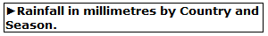
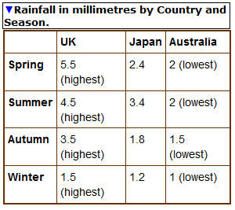

The w3c-disclosure element
- Extends:
- HTML
buttonelement - additional attributes:
controlfor- unique identifier (ID) -expanded- boolean - display state of the controlled element
The w3c-disclosure represents a disclosure widget which controls the display state of an element in the same document, referenced via the controlfor attribute. The expanded attribute present removes the HTML hidden attribute from the element referenced by the controlfor attribute. When absent it adds the HTML hidden attribute to the element referenced by the controlfor attribute.
Accessibility layer semantics
The controlfor attribute is mapped to the aria-controls attribute and the expanded attribute is mapped to the aria-expanded attribute. Whenever the values of the custom element attributes are set, the values of the associated aria- attributes reflect the values of those values. This feature, along with the use of the HTML button element as an extension point, provides built-in name, role state and interaction accessibility to the w3c-disclosure custom element.
Control behaviour
Activating the w3c-disclosure button by pressing or clicking changes the display state of the referenced element. A visual indication of the current state of the referenced element is shown by the button arrow icon orientation (issue - arrow announced by jaws)
.
Here is an example of use of the w3c-disclosure custom element.
Display a data table on activation of the disclosure button:
Hidden state:

<button is="w3c-disclosure" controlfor="table-details"> Rainfall in millimetres by Country and Season.</button> <table id="table-details" hidden> ...Visible state:

<button is="w3c-disclosure" controlfor="table-details" expanded>Rainfall in millimetres by Country and Season.</button> <table id="table-details"> <tr> <td></td> <th scope="col">UK </th> <th scope="col">Japan</th> <th scope="col">Australia</th> </tr> <tr> <th scope="row">Spring </th> <td>5.5 (highest)</td> <td>2.4 </td> <td>2 (lowest)</td> </tr>
<tr><th scope="row">Summer </th> <td>4.5 (highest)</td> <td>3.4</td> <td>2 (lowest)</td> </tr>
<tr> <th scope="row">Autumn</th> <td>3.5 (highest)</td> <td>1.8 </td> <td>1.5 (lowest)</td> </tr> <tr> <th scope="row">Winter</th> <td>1.5 (highest)</td> <td>1.2 </td><td>1 (lowest)</td> </tr>
</table>